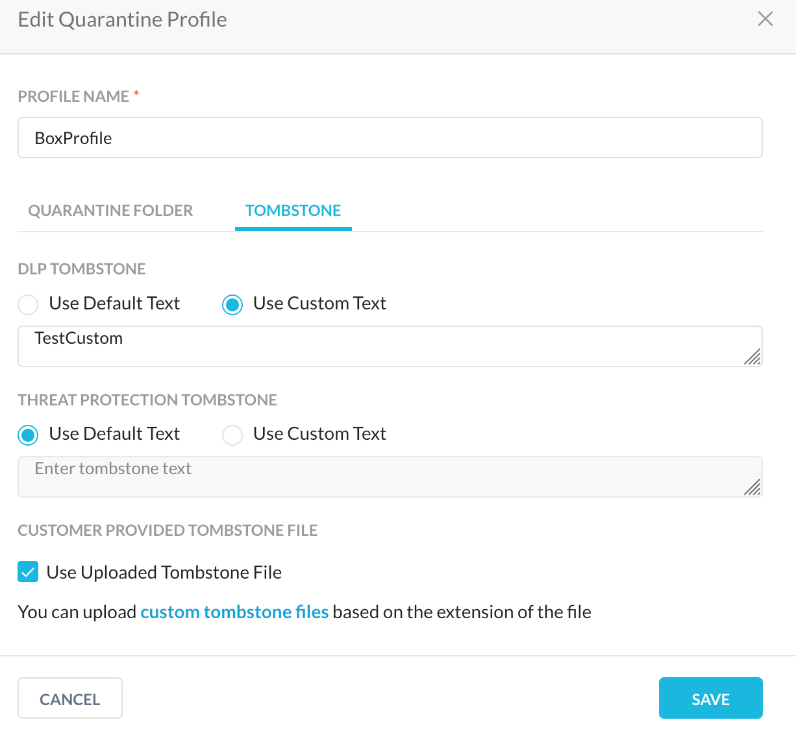
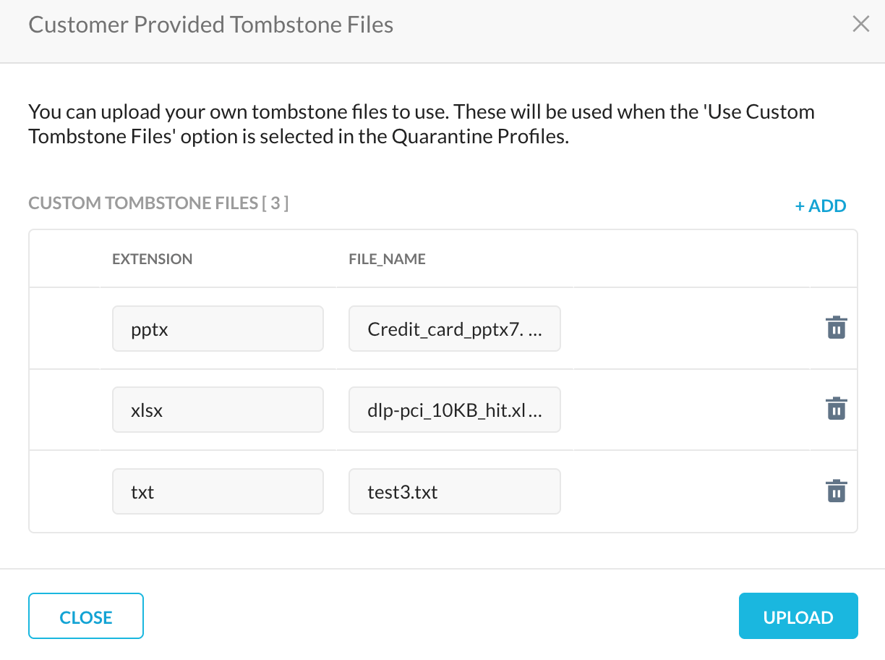

Quarantine Profile
A Quarantine profile is used for specifying where the file needs to be quarantined when there is a policy action of Quarantine. Use tombstone files to replace the content of the original file. The name and extension of the original file will be preserved.
To create quarantine profile:
Go to Policies > PROFILES > Quarantine > NEW QUARANTINE PROFILE.

Tip
To upload your tombstone files directly, click CUSTOMER PROVIDED TOMBSTONE FILES. To use this feature, refer to Upload Tombstone Files below.
Choose the app where you want the quarantined files to be uploaded. Today we support quarantined folders on:
Box
Dropbox
Google Drive
Microsoft Office 365 OneDrive
Microsoft Office 365 SharePoint
Slack for Enterprise
Note
For malware infected quarantine files, only one generic quarantine profile for a specific app will be used to store the infected files. For example, you can create a quarantine profile on Box. This profile will be used to store the malware infected quarantine files for the rest of the supported apps. Once you have created the quarantine profile, refer the Configure Threat Protection for API Data Protection article to enable threat protection on API Data Protection apps.
Choose the instance of the app previously created in Settings > API-enabled Protection > SaaS.
[SharePoint only] Select a SharePoint site and click SAVE.
[Box, Dropbox, Google Drive, OneDrive, and Slack Enterprise only] Enter the email address of the owner of the quarantine folder.
Note
Before setting up a quarantine profile for Office 365 OneDrive app, the owner should log into the Office 365 account and set up the OneDrive app.
For Slack for Enterprise app, the email address should be the same as that you entered during the Slack for Enterprise instance setup.
Choose the Encrypt checkbox if the quarantined files have to be encrypted.
Enter the email address(es) of administrators that need to be notified when a file is uploaded to quarantine folder.
Click NEXT.
In the CUSTOMIZE tab, you can either select the default or custom text to be displayed during a policy violation for tombstone and malware tombstone text.
 To use your own tombstone files, enable the Use Uploaded Tombstone File checkbox. If you have not yet uploaded a tombstone file, click Customer Provided Tombstone File to do so.
Click NEXT.
Enter a quarantine profile name and click CREATE QUARANTINE PROFILE.
Click Apply Changes.
If you have a requirement to quarantine malware infected files, refer the Configure Threat Protection for API Data Protection to enable threat protection on API Data Protection apps.
Upload Tombstone Files
To use your own tombstone files, you can upload the file(s) while creating a quarantine profile, or upload them directly by clicking CUSTOMER PROVIDED TOMBSTONE FILES on the main Quarantine Profile page. Enter a file extension type and then click Select File to upload your tombstone file. When finished, click Upload.
|  |